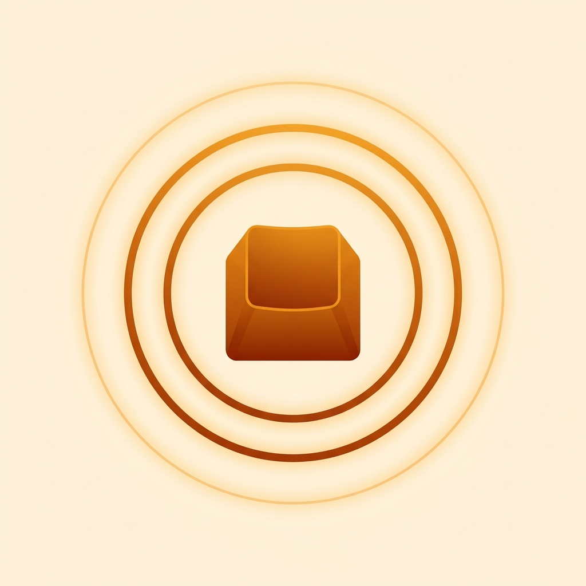

ThockMeter は、メカニカルキーボードの「打鍵音」を iPhone のマイクでリアルタイムに周波数解析し、Thock 度（0〜100）として数値化する自作キーボード愛好家向けの音響メーターです。スイッチのルブ、ケースフォーム、テープモッド——その変化が「本当に深い thock になったのか」を、耳の印象ではなくスコアと周波数プロファイルで確認できます。
※ 同一端末・同一位置での相対比較に最適化したツールです。絶対音量（dB/SPL）は測定しません。音が出る（鳴る）キーボードの音色（thock↔clack）評価に最適化しています。
計測とスコア表示は無料・無制限です。ThockMeter Pro（¥600 買い切り）で、プロファイルの無制限保存・A/B比較・共有カードの書き出しが解放されます。
ご質問・ご要望・不具合報告は、お問い合わせフォームよりお寄せください。
ThockMeter analyzes your mechanical keyboard's keystroke sound in real time and turns it into a Thock score (0–100) — built for the custom-keyboard hobby. See whether a lube job, case foam, or a tape mod actually made it deeper and thockier, with a score and a live frequency profile instead of just your ears.
A relative comparison tool for the same phone in the same position. It does not measure absolute loudness (dB/SPL), and is tuned for the tone (thock↔clack) of audible boards.
Measuring and scoring are free and unlimited. ThockMeter Pro (one-time) unlocks unlimited saved profiles, A/B compare, and shareable score cards.
The app collects no personal data and works fully offline. See the Privacy Policy.